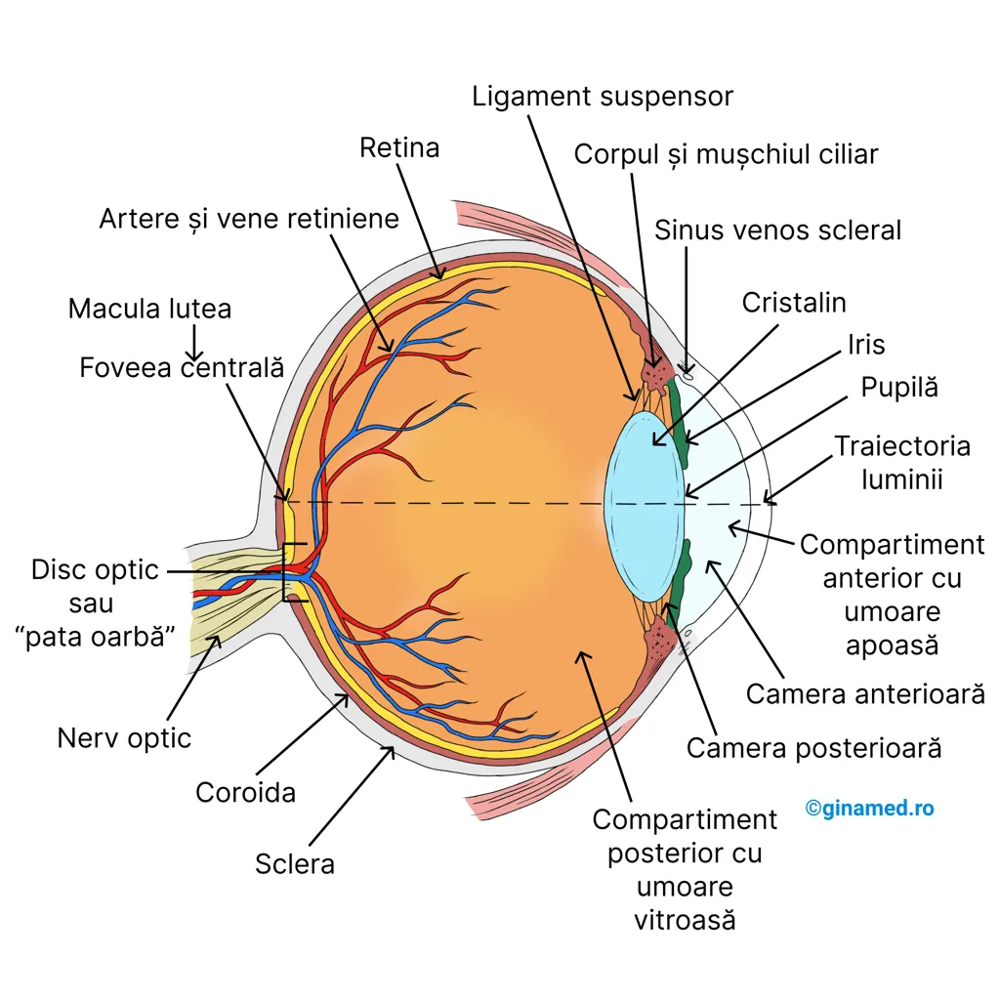
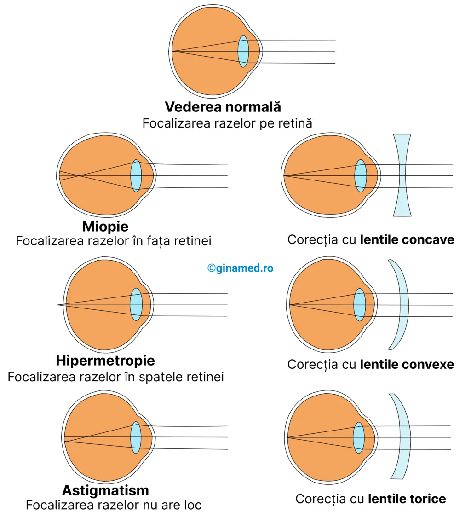
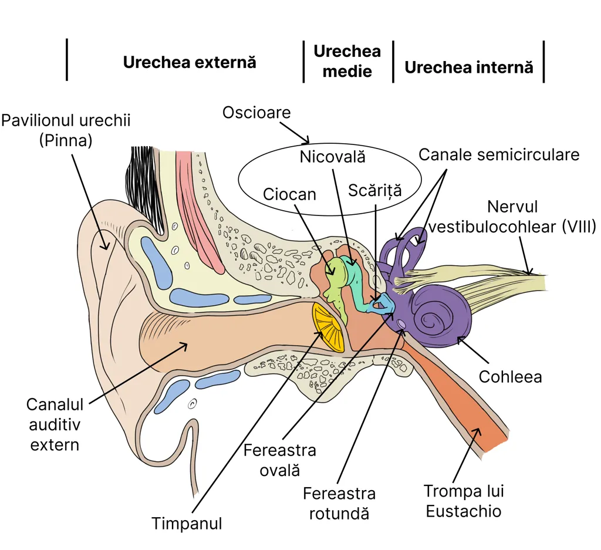
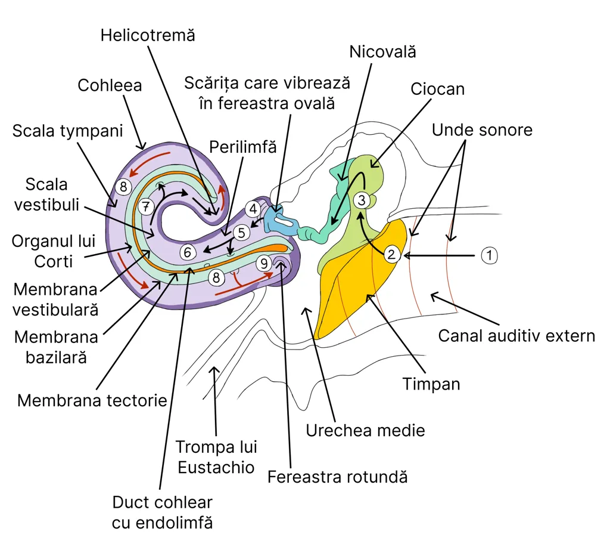
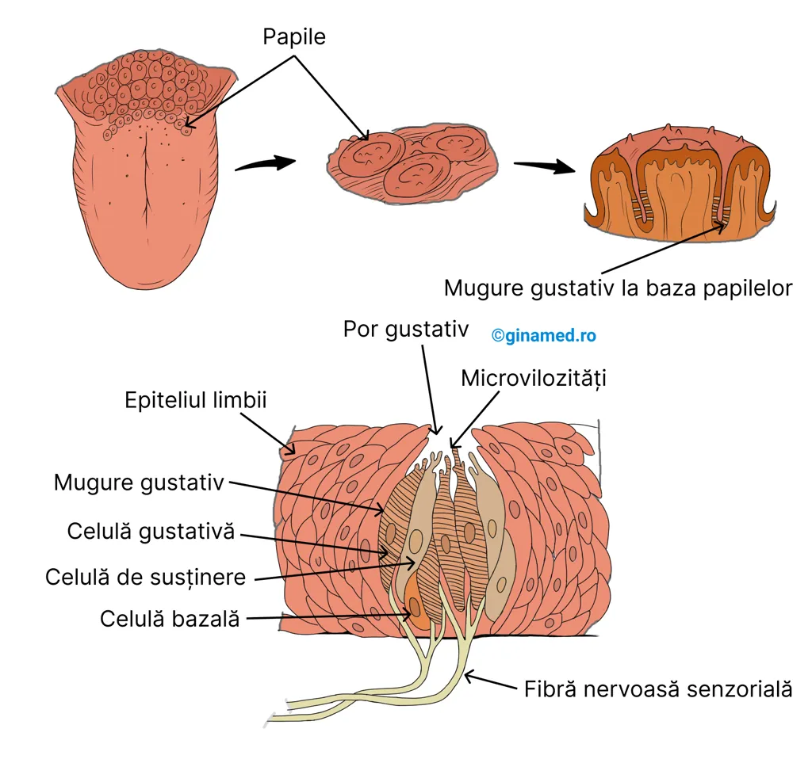
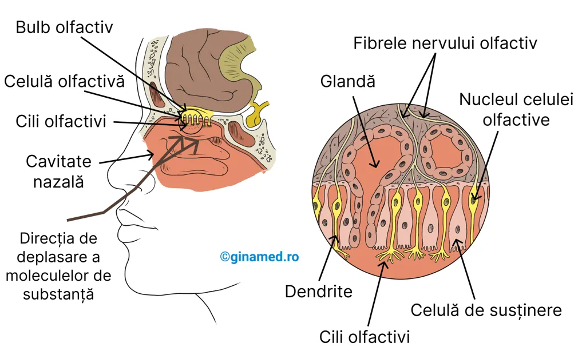
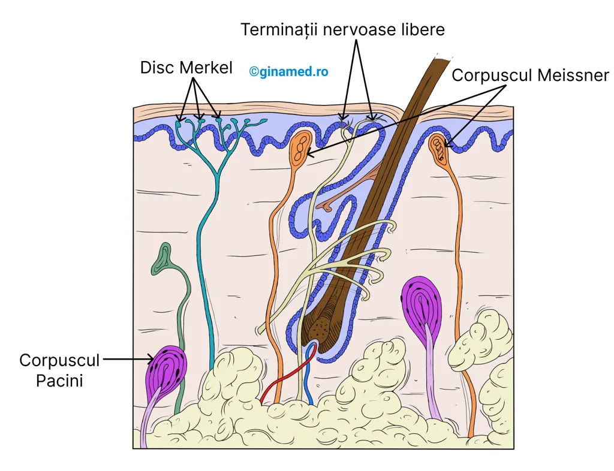

12.1. Ochiul și vederea
Ochiul primește lumină din mediul înconjurător, formează o imagine la nivelul retinei și transmite impulsurile nervoase către encefal.
1Simțurile și receptorii
Simțurile organismului uman includ văzul, auzul, gustul, precum și alte simțuri, cum ar fi simțul tactil și echilibrul. Toate simțurile dispun de receptori foarte specializați care fac posibil răspunsul organelor de simț la diferiți stimuli.
Receptorii care detectează stimulii chimici se numesc chemoreceptori, cei care detectează stimulii luminoși se numesc fotoreceptori, iar cei care detectează stimuli mecanici sunt denumiți mecanoreceptori. Dacă receptorii se află pe suprafața corpului, ei sunt denumiți exteroceptori, iar dacă se localizează în interiorul mușchilor scheletici, articulațiilor sau oaselor și detectează poziția corpului se numesc proprioceptori.
Simțurile sunt strâns asociate atât funcțional, cât și structural cu sistemul nervos și depind de acesta pentru interpretarea conștientă a modificărilor de mediu pe care le percep.
| Organ de simț | Receptori specifici | Localizare | Natura stimulului | Stimulul | Localizare anatomică |
|---|---|---|---|---|---|
| Mucoasa olfactivă | Celula olfactivă | Exteroceptor | Chemoreceptor | Soluții chimice | În cavitatea nazală, superior |
| Mugurele gustativ | Celula gustativă | Exteroceptor | Chemoreceptor | Soluții chimice | Partea dorsală a limbii |
| Ochiul | Celule cu conuri și cu bastonașe | Exteroceptor | Fotoreceptor | Lumina | Ochiul |
| Urechea | |||||
| Cohleea | Organul lui Corti (celule ciliate) | Exteroceptor | Mecanoreceptor | Vibrațiile | Urechea internă |
| Aparatul vestibular | Macula și ampula (celule ciliate) | Proprioceptor | Mecanoreceptor | Deflexiunea | Urechea internă |
2Anatomia ochiului
Ochiul este organul vederii. El primește lumină din mediul înconjurător și formează o imagine la nivelul receptorilor celulelor nervoase ale retinei. Imaginea este apoi transformată în impulsuri nervoase, care sunt interpretate în encefal, în principal la nivelul lobilor occipitali ai emisferelor cerebrale.
Ochiul este o structură sferică, parțial mobilă, plină cu lichid, inervată de nervul optic, un nerv cranian ce se îndreaptă spre emisferele cerebrale. Imaginile inițiate de către receptorii din retină sunt transmise mai departe de-a lungul nervului optic, ale cărui fibre mediale se încrucișează la nivelul chiasmei optice. Apoi, aceste fibre trec prin tractul optic, ajungând în final la cortexul vizual din lobii occipitali ai emisferelor cerebrale, unde imaginile sunt interpretate. Fiecare lob occipital primește imagini de la ambii ochi, ceea ce asigură vederea în spațiu.
Din punct de vedere anatomic, termenul „ochi” este sinonim cu globul ocular. Lungimea globului ocular este puțin mai mare decât lățimea sa, el având o porțiune anterioară care proemină în afara sferei. Peretele globului ocular are trei straturi, sau învelișuri: un strat extern rezistent, fibros, cuprinzând corneea și sclerotica (sclera); un strat mijlociu bogat vascularizat, care conține coroida, irisul și corpii ciliari; și un strat intern, retina, care conține receptorii pentru vedere.

Ochiul conține două compartimente pline cu fluide: compartimentul anterior și compartimentul posterior. O regiune a compartimentului anterior, camera anterioară, se află între iris și cornee. O altă regiune, camera posterioară, se găsește între iris și cristalin. Ambele camere conțin un lichid numit umoarea apoasă. Compartimentul posterior, care se întinde de la cristalin la retină, conține o substanță gelatinoasă, numită umoarea vitroasă.
Pupila este un orificiu situat la nivelul irisului. Irisul este alcătuit din două straturi de mușchi neted: mușchiul constrictor, care îngustează pupila, și un mușchi dilatator, care mărește diametrul pupilei. Irisul conține pigmenții care conferă culoarea ochilor. „Albul ochilor” este reprezentat de porțiunea vizibilă a scleroticii (sclerei).
În spatele irisului se găsește cristalinul, un disc transparent, biconvex, alcătuit dintr-un material proteic fibros dispus în straturi concentrice. Cristalinul este ferm ancorat de corpii ciliari prin intermediul ligamentului suspensor. Cea mai mare parte a corpului ciliar, care modifică forma cristalinului pentru a focaliza imaginile, constă din mușchiul ciliar intrinsec. Corpul ciliar se unește cu irisul la periferia acestuia, iar restul irisului se extinde în interior, între cornee și cristalin.
| Structura | Funcția |
|---|---|
| Corneea | Refractă lumina; importantă pentru focalizarea luminii pe retină |
| Sclera | Menține forma ochiului și îl protejează; de ea se atașează mușchii extrinseci |
| Irisul | Controlează cantitatea de lumină ce trece prin pupilă |
| Corpul ciliar | Modifică forma cristalinului (acomodare) și secretă umoarea apoasă |
| Coroida | Absoarbe lumina; conține vasele sanguine ale structurilor oculare |
| Retina | Absoarbe lumina; detectează lumina și formează imaginile ce vor fi transmise encefalului |
| Cristalinul | Refractă lumina; important în acomodare |
| Compartimentul anterior | Menține forma ochiului și refractă lumina prin intermediul umorii apoase |
| Compartimentul posterior | Menține forma ochiului și refractă lumina prin intermediul umorii vitroase |
| Umoarea apoasă | Umple compartimentul anterior, contribuind la menținerea formei ochiului; menține presiunea intraoculară |
| Umoarea vitroasă | Umple compartimentul posterior și menține presiunea intraoculară; conferă forma ochiului și menține retina atașată pe coroidă; refractă lumina |
3Retina și structurile accesorii
Stratul cel mai intern al globului ocular este retina. Ea se extinde anterior până la porțiunea posterioară a corpului ciliar. Retina are două straturi: un strat extern, pigmentat, ce conține melanină, aderă de coroidă și absoarbe razele de lumină, și un strat intern alcătuit din țesut nervos, retina propriu-zisă.
Stratul intern al retinei este alcătuit din trei straturi de neuroni. În imediata apropiere a coroidei se află un strat de neuroni receptori, care conține aproximativ 120 de milioane de celule cu bastonașe și 6-7 milioane de celule cu conuri, denumite astfel datorită formei lor. Urmează un strat de neuroni bipolari, care recepționează impulsurile generate de celulele cu conuri și bastonașe. Al treilea strat conține neuroni multipolari, ai căror axoni formează nervul optic.
Structurile accesorii ale ochiului includ sprâncenele, pleoapele, genele, conjunctiva și aparatul lacrimal. Sprâncenele și genele oferă protecție împotriva pătrunderii corpilor străini în pupilă, iar pleoapele protejează porțiunea anterioară a ochiului. Pe partea internă, pleoapele sunt căptușite de conjunctivă, o membrană mucoasă care se răsfrânge acoperind parțial și globul ocular. Aparatul lacrimal conține glandele lacrimale, ce produc lacrimi care scaldă globul ocular și îl păstrează umed.
4Fiziologia vederii
Simțul vederii se bazează în principal pe cele două tipuri de celule din retină, celulele cu conuri și cu bastonașe. Celulele cu bastonașe permit vederea în condiții de luminozitate scăzută. Ele permit perceperea contururilor obiectelor și realizează vederea în lumina crepusculară.
Celulele cu conuri au acuratețe maximă atunci când există suficientă lumină pentru a permite vederea de aproape și observarea detaliilor. Ele sunt răspunzătoare de vederea diurnă, perceperea detaliilor și a culorilor. Celulele cu conuri sunt concentrate la nivelul foveei centrale, o arie de depresiune ușoară aflată în apropierea centrului retinei. Pe măsură ce ne îndepărtăm de foveea centrală, numărul celulelor cu conuri scade, însă crește numărul celor cu bastonașe. Celulele cu bastonașe se găsesc în număr mare la periferia retinei. Din acest motiv, detectarea mișcării și vederea crepusculară sunt facilitate în principal de către retina periferică.
Atât celulele cu bastonașe, cât și cele cu conuri detectează mișcarea din mediul înconjurător și utilizează un pigment vizual numit rodopsină. Partea proteică (opsina) a acestui pigment este diferită în celulele cu bastonașe și între diferitele tipuri de celule cu conuri. Acest fapt permite diferențierea culorilor și a intensității luminoase. Restul moleculei, derivată din vitamina A, este identică în toate celulele.
Când energia luminoasă stimulează celulele cu conuri și cu bastonașe, apar schimbări rapide de formă ale rodopsinei din aceste celule. Aceste modificări generează impulsuri nervoase la nivelul neuronilor bipolari și multipolari, impulsuri ce sunt transportate prin intermediul nervului optic și al tractului optic către cortexul vizual cerebral, unde sunt interpretate.
Discul optic reprezintă locul de origine al nervului optic. El nu conține receptori vizuali, fiind denumit astfel și pata oarbă. Imaginea care ajunge la retină este inversată datorită proprietăților optice ale cristalinului, dar ea este percepută în orientarea corectă la nivelul cortexului lobilor occipitali.
5Focalizarea imaginilor
Traseul razei luminoase la nivelul ochiului începe de la corneea transparentă ce acoperă suprafața ochiului. Lumina traversează în continuare pupila, care își modifică forma în funcție de intensitatea luminoasă și de distanța față de obiectul vizualizat. Pupila se micșorează când obiectul respectiv se află în apropiere și lumina este puternică și se dilată când obiectul este îndepărtat și lumina slabă.
Razele luminoase traversează apoi umoarea apoasă și ajung la cristalin, principala structură cu rol în focalizarea imaginii. Cristalinul este elastic și focalizează razele luminoase pe retină. Procesul de focalizare a luminii, bazat pe elasticitatea cristalinului, se numește acomodare. Când obiectul privit este departe, cristalinul este aproape plat, iar când obiectul respectiv se află în apropiere, cristalinul devine convex.
Modificarea formei cristalinului se datorează în principal mușchilor ciliari, ce acționează asupra ligamentului suspensor. În timpul acomodării pentru vederea de aproape, mușchiul ciliar se contractă, eliberând tensiunea din ligamentul suspensor. Acest lucru permite cristalinului să devină mai convex datorită elasticității sale naturale și tendinței de a lua o formă sferică.
Cristalinul, corneea, umoarea apoasă și cea vitroasă sunt medii refractare, adică medii care focalizează razele luminoase și cauzează convergența acestora către foveea centrală a retinei, unde se formează imaginea.
Spațiul cuprins cu privirea de un ochi se numește câmp vizual extern. Câmpul vizual extern al unui ochi se suprapune cu cel al celuilalt ochi, această suprapunere fiind răspunzătoare pentru percepția unei imagini tridimensionale. Mușchii extrinseci ai ochiului determină mișcări care permit percepția unei singure imagini. Într-o afecțiune numită strabism, ochii nu se mișcă în mod coordonat. Persoanele cu această afecțiune văd două imagini în loc de una singură.
6Tulburările de vedere
Două dintre cele mai comune tulburări de vedere sunt miopia și hipermetropia. În cazul miopiei, imaginea se formează în fața retinei. Această afecțiune apare din cauza alungirii naturale a globului ocular sau a unui cristalin care nu se acomodează corect. Pentru a putea focaliza imaginile pe retină se utilizează ochelari cu lentile biconcave.
În hipermetropie, imaginea se formează în spatele retinei și este neclară, din cauza faptului că ochiul este prea scurt sau cristalinul este prea plat pentru a permite vederea de aproape. Pentru a focaliza imaginile pe retină se utilizează ochelari cu lentile biconvexe.

O altă tulburare de vedere este astigmatismul, provocat de o curbură neregulată a corneei sau a cristalinului. Această curbură neregulată provoacă difracție, iar razele de lumină se proiectează pe zone diferite de pe retină, producând o imagine neclară. Astigmatismul reprezintă incapacitatea de a distinge două puncte apropiate, în anumite părți ale câmpului vizual. Această afecțiune se corectează prin utilizarea unor lentile cu o curbură specială (lentile torice).
Discromatopsia este o altă tulburare de vedere, datorată incapacității celulelor cu conuri de a reacționa la anumite culori ale spectrului de lumină. De exemplu, unele persoane nu pot deosebi culoarea verde de cea roșie din cauza lipsei celulelor cu conuri sensibile la culoarea roșie. Discromatopsia este, de obicei, determinată genetic; femeile sunt purtătoare ale acestei modificări, însă ea este prezentă mai frecvent la bărbați.
Elasticitatea cristalinului scade cu vârsta, astfel capacitatea de a vedea la distanțe mici scade. Acest fenomen se numește presbitism și se corectează cu ochelari de citit.
12.2. Urechea și auzul
Urechea recepționează undele sonore și le transformă în impulsuri nervoase, interpretate în ariile auditive ale lobilor temporali.
1Anatomia urechii
Urechea este organul auzului. Funcția sa este de a recepționa undele sonore din mediul înconjurător și de a le transmite neuronilor din urechea internă. La acest nivel, undele sonore sunt transformate în impulsuri nervoase, care sunt transmise encefalului. Ariile auditive majore se află în cortexul lobilor temporali ai emisferelor cerebrale.
Urechea are trei componente: urechea externă, urechea medie și urechea internă. Urechea externă este alcătuită din pavilionul urechii și canalul auditiv extern, care conduce vibrațiile sonore. Intrarea în canalul auditiv extern se numește orificiul auditiv extern. La capătul proximal al canalului se află membrana timpanică (timpanul).
Urechea medie conține trei oase numite și oscioare. Acestea sunt ciocanul (malleus), nicovala (incus) și scărița (stapes). Capătul proximal al scăriței este conectat cu fereastra ovală, care este în contact cu urechea internă.
Un tub subțire și lung, trompa lui Eustachio, leagă faringele de urechea medie. Acest conduct este util în menținerea unei presiuni egale de ambele părți ale timpanului. La altitudini mari, o cantitate de aer cu presiune înaltă rămâne captivă în interiorul urechii medii. Acest aer ajunge, prin intermediul trompei lui Eustachio, în faringe, determinând o „pocnitură”. La altitudini mici, aerul cu presiune înaltă urcă prin trompa lui Eustachio în urechea medie pentru a egaliza presiunile, determinând o altă „pocnitură”.
Urechea internă conține o structură de forma unui melc, denumită cohlee, în interiorul căreia se află un lichid numit perilimfă. Vibrațiile perilimfei generează impulsurile nervoase ce provoacă senzația sonoră.

2Fiziologia auzului
Auzul este percepția vibrațiilor sonore provocate de un obiect și transformate în unde sonore. Mediul în care se propagă aceste vibrații este aerul, care le conferă undelor sonore frecvență, intensitate și timbru.
Frecvența reprezintă numărul de vibrații ale aerului într-o unitate de timp, deseori exprimată în cicli pe secundă sau hertzi. Intensitatea sunetului variază în funcție de amplitudinea undei sonore și este exprimată în decibeli. Timbrul (calitatea) sunetului depinde de armonicele tonale, care variază în funcție de obiectul care produce sunetul.
Auzul implică unele acțiuni mecanice ce transformă undele sonore în impulsuri mecanice. Undele sonore pătrund în canalul auditiv extern și se lovesc de timpan. Energia undelor sonore provoacă vibrația timpanului, care este transmisă mai departe celor trei oscioare din urechea medie. Ciocanul, nicovala și scărița vibrează secvențial, pe măsură ce sunt transmise undele sonore.
Ultimul oscior, scărița, vine în contact cu fereastra ovală, aflată la intrarea în cohlee. Vibrațiile ferestrei ovale provoacă modificări ale presiunii perilimfei din cohlee. Vibrațiile perilimfei sunt transmise organului lui Corti din interiorul cohleei.
Organul lui Corti conține dendritele neuronilor ai căror axoni formează ramura cohleară a nervilor vestibulocohleari (auditivi); aceste dendrite vin în contact cu celule ciliate. Membrana vestibulară din cohlee delimitează, în interior, o cantitate de endolimfă în jurul celulelor ciliate. Când presiunea perilimfei se modifică, o membrană numită membrana tectoria mișcă celulele ciliate, declanșând impulsuri nervoase. Modificările de presiune sunt transmise înapoi perilimfei, iar fereastra rotundă se bombează, pentru a micșora presiunea.

Impulsurile sunt transmise de-a lungul ramurii cohleare a nervului vestibulocohlear către lobii temporali ai emisferelor cerebrale, unde are loc interpretarea sunetului.
12.3. Alte simțuri
Celelalte simțuri includ gustul, mirosul, diverse tipuri de simțuri tactile și simțul echilibrului.
1Gustul
Simțul gustului se mai numește și simț gustativ și este un simț bazat pe substanțe chimice dizolvate într-un lichid. După dizolvare, moleculele substanței sunt detectate de mugurii gustativi ai limbii.

Mugurii gustativi sunt localizați pe suprafața dorsală a limbii, fiind dispuși pe mici protuberanțe numite papile.
Cele 5 gusturi primare sunt dulce, acru, amar, sărat și umami (datorat aminoacidului numit glutamat). Partea posterioară a limbii este mai sensibilă la moleculele ce stimulează gustul amar, în timp ce gustul acru stimulează porțiunile antero-laterale ale limbii, iar gustul sărat stimulează mai ales părțile postero-laterale ale limbii. Gustul dulce și cel sărat sunt detectate cel mai bine la nivelul vârfului limbii. Receptorii pentru umami sunt localizați în vecinătatea faringelui.
Pentru a declanșa senzația de gust, moleculele pătrund în porii gustativi ai papilelor și stimulează celulele specializate gustative din mugurii gustativi. Aceste celule generează și transmit impulsuri de-a lungul fibrelor nervoase către ramuri ale nervului facial sau glosofaringian și mai departe către encefal. Impulsurile nervoase trec prin bulb, unde nervii fac sinapsă cu neuroni ce duc la talamus. Neuronii din talamus transportă impulsurile către lobul parietal, unde stimulii gustativi sunt interpretați.
2Mirosul
Simțul mirosului se mai numește și simț olfactiv. Este un simț care necesită contactul dintre receptori și moleculele substanțelor ce urmează a fi detectate.
La mirosirea unei substanțe, molecule din substanța respectivă pătrund în nas și stimulează celule olfactive specializate, localizate în mucoasa porțiunii superioare a cavității nazale. Aceste celule generează impulsuri nervoase care se propagă de-a lungul nervului olfactiv. Acest nerv pătrunde în cutia craniană prin lama ciuruită a osului etmoid, trece prin bulbii olfactivi în tractul olfactiv și se termină în cortexul olfactiv din lobii frontal și temporal, unde stimulii sunt interpretați.

Organismul uman poate detecta peste 4000 de mirosuri diferite, provocate de peste 200 de substanțe chimice odorate. Celulele olfactive pot obosi rapid, iar conștientizarea mirosurilor diminuează.
3Simțul tactil și simțurile înrudite
Simțul tactil, precum și simțurile înrudite ca durerea, presiunea și vibrația, utilizează receptori aflați în piele, mușchi, articulații și viscere. Există mai multe tipuri de receptori.
Terminațiile nervoase libere din piele detectează durerea. Discurile Merkel, aflate tot în piele, detectează stimulii tactili. Corpusculii Meissner detectează presiunile și vibrațiile ușoare, iar corpusculii Pacini recepționează presiunile și vibrațiile puternice de la nivelul pielii. Mușchii, articulațiile și viscerele dispun de receptori asemănători. Impulsurile sunt transmise către encefal, unde sunt interpretate.

4Echilibrul
Simțul echilibrului derivă din activitatea urechii interne, unde are loc și auzul. Urechea internă conține o serie de canale săpate în osul temporal, ce alcătuiesc un labirint.
Labirintul urechii interne are două componente: labirintul membranos și labirintul osos. Labirintul membranos este cuprins în interiorul labirintului osos. Labirintul osos reprezintă sediul cohleei, vestibulului și al canalelor semicirculare și este umplut cu perilimfă, care scaldă labirintul membranos. Perilimfa este asemănătoare cu lichidul cefalorahidian. Labirintul membranos conține endolimfă, care este asemănătoare cu lichidul interstițial.
În interiorul labirintului osos se află trei structuri numite canale semicirculare, care conțin endolimfă și sunt conectate cu cohleea la nivelul unei regiuni numite vestibul. În interiorul vestibulului se găsesc două structuri numite utricula și sacula, unite printr-un canal subțire. Utricula și canalele semicirculare sunt asociate simțului echilibrului.
Canalele semicirculare sunt dispuse la 120 de grade unul față de celălalt, fiecare fiind conectat cu utricula. La locul de joncțiune cu utricula, fiecare canal prezintă o porțiune dilatată, numită ampulă, în care se găsește un grup de celule senzoriale ciliate. În urma modificării poziției capului, endolimfa din canalele semicirculare stimulează celulele ciliate, generând impulsuri transmise fibrelor nervoase din jurul lor. Aceste fibre transportă impulsurile către encefal, de-a lungul ramurii vestibulare a nervului vestibulocohlear. La rândul său, encefalul trimite impulsuri motorii mușchilor, care ajustează poziția corpului, menținându-i echilibrul. Această formă de echilibru se numește echilibru dinamic.
Mișcările mai puțin ample implicate în menținerea posturii sau echilibrul static apar printr-un mecanism ușor diferit. În interiorul saculei și al utriculei se găsesc niște structuri de mici dimensiuni, numite macule. Fiecare maculă este alcătuită din celule ciliate și o membrană ce conține mici fragmente de carbonat de calciu numite otoliți (calculi).
În urma unei schimbări ușoare a poziției capului, presiunea exercitată asupra acestei membrane provoacă modificarea poziției otoliților, care acționează asupra celulelor ciliate. Acestea, la rândul lor, generează impulsuri nervoase ce sunt transmise prin nervul vestibulocohlear către encefal, care ajustează postura corpului prin impulsuri motorii trimise către mușchi.